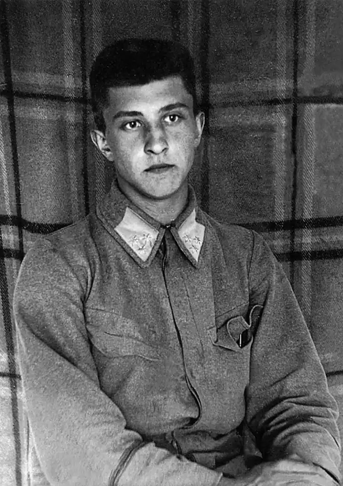

Купчинський Роман Григорович (псевдоніми і криптоніми – Мусій Гак, Чіпка Галант, Галактіон Чіпка, Тойсам, М.Д.Т.С. та ін.) – поет, прозаїк, критик, композитор, бард січового стрілецтва, учасник національно-визвольних змагань, старшина Легіону Українських січових стрільців та Української Галицької армії, громадський діяч. Народився 24 вересня 1894 року в с. Розгадів (нині село Зборівського р-ну Тернопільської обл.) в сім'ї священика. Від 1896 жив у с. Кадлубиське Бродівського повіту на Львівщині. Від 1911 – член Товариства студентів вищих шкіл "Україна".
1913 закінчив Перемишльську гімназіюзію. Цього ж року почав вчитися в Греко-католицькій духовній семінарії у Львові. Був рекордсменом з легкої атлетики Запорозьких ігрищ, чемпіоном Галичини з легкої атлетики. На початку Першої світової війни разом з багатьма іншими студентами записався до створюваного тоді Легіону УСС. На постоях вояків брав участь в організації шкільного навчання, читалень, хорів і оркестрових гуртів, видавав пресові листки, журнали.
Від 1915 разом з Л.Лепким, Ю.Назаруком, Н.Гайворонським, А.Лотоцьким, С.Чарнецьким, Ю.Шкрумеляком був членом Пресової квартири УСС; цього ж року опублікував у Відні в часописі "Вісник Союзу визволення України" свій перший вірш. 1916–17 був командантом (командиром) чоти, 1917–18 – командантом сотні, ад'ютантом полку в ранзі поручника. Створив (писав слова і мелодії) багато стрілецьких пісень. Найпопулярнішою в той час стала написана ним 1918 в день відходу вишколу й коша на Херсонщину пісня "Зажурились галичанки". Від 1919 служив в УГА. У липні 1920 у складі військ УГА, які відступили на територію Польщі, був інтернований. Мешкав у таборі Тухоля для старшин УГА. Після звільнення в лютому 1921 розпочав навчання у Віденському університеті. Цього ж року опублікував драматичну поему "Великий день". 1922 продовжив студії у Львівському таємному українському університеті і разом із бойовими друзями-митцями В.Бобинським і П.Ковжуном створив літературну групу неосимволістів "Митуса", входив до редколегії однойменного журналу. Від 1924 редагував газету "Діло". 1926 почав писати тексти для новоствореного Л.Лепким лялькового театру "Вертеп наших днів". 1928 опублікував дві перші частини роману-трилогії про стрілецьке життя "Заметіль" (3-тя частина побачила світ 1933). Від 1933 очолював Товариство письменників і журналістів ім. І.Франка, працював у видавництві "Червона калина". Разом з В.Софронівим-Левицьким написав сценарій фільму "Для добра і краси" (знятий Ю.Дорошем 1936–37). З початком Другої світової війни та приєднанням земель Західної України до УРСР (див. Возз'єднання українських земель в єдиній державі) у вересні 1939 переїхав до Кракова, працював там в Українському видавництві, друкувався в газетах, зокрема у "Краківських вістях". Наприкінці II світ. війни виїхав до Німеччини, займався літераткрною діяльністю. В 1949 емігрував до США. Від 1950 – член управи Літературно-мистецького клубу в Нью-Йорку. Співпрацював з газетою "Свобода", публікував спогади і художні твори в українській періодиці США і Канади. Був членом головної редакційної колегії журналу "Вісті Комбатанта". 1952 увійшов до складу ініціативної групи, яка організувала Спілку українських журналістів Америки (1958–60 був її головою). 1964 опублікував "Мисливські оповідання", 1965 – травестійно-героїчну поему "Скоропад" (відновлений варіант втраченого в 1940-х рр. тексту, що був написаний 1919–22). Автор слів і мелодій понад 80 стрілецьких пісень – героїчних, маршових, історичних, ліричних, розважальних, створених переважно на основі справжніх подій, про конкретних людей ("Заквітчали дівчатонька", "Був собі стрілець", "Ірчик" та ін.). Багато пісень Купчинського стали народними ("Їхав козак на війноньку", "Як з Бережан до Кадри", "Зажурились галичанки", "Човен хитається" та ін.). "Ода до пісні" Купчинського стала програмним шкільним твором в українській діаспорі. Його твір "Боже Великий, Творче Всесвіту…" став національно-релігійним гімном багатьох українців. Вершиною поетичної творчості Купчинського вважається неопублікована збірка "Село", рукопис якої зберігається у Львівській національній науковій бібліотеці України імені В.Стефаника. В останні роки свого життя тяжко хворів. Помер 10 листопада 1976 року в м. Оссінг (шт. Нью-Йорк, США). 1977 посмертно опубліковано повну збірку пісень Купчинського "Ми ідемо в бій" та збірку віршів і прози "Невиспівані пісні". 12 листопада цього ж року в Нью-Йорку відбулася урочиста конференція Наукового товариства імені Шевченка і Братства УСС на пошану Романа Купчинського. Замовчувані в радянські часи в УРСР твори Купчинського тепер перевидаються, його пісні часто звучать у радіо— і телепрограмах, зокрема в радіопрограмі "Шануймося, друзі". На пошану Купчинського в його рідному селі – Розгадові – в 1989 започатковано проведення щорічного пісенного фестивалю "Стрілецька слава", 1990 – відкрито меморіальну дошку й освячено музей (розташовується в його родинній хаті – колишноьму парафіяльному будинкові; син Купчинського – Юрій – передав музеєві листи й документи батька), у жовтні 1994 до 100-ліття від дня його народження відкрито пам'ятник (скульп. П.Кулик, архіт. В.Блюсюк).